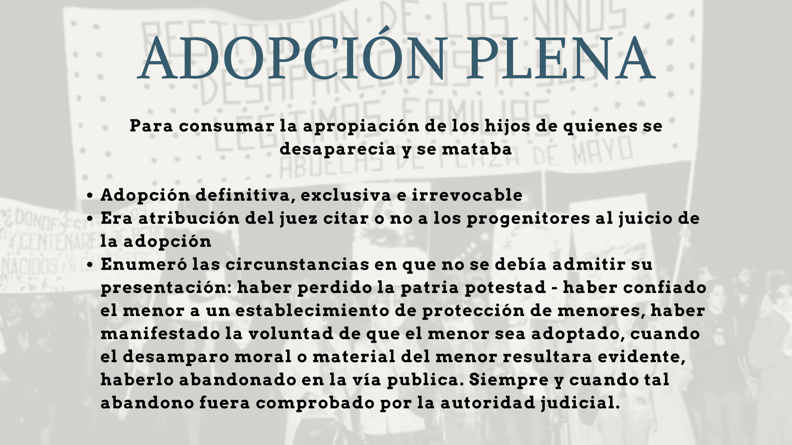
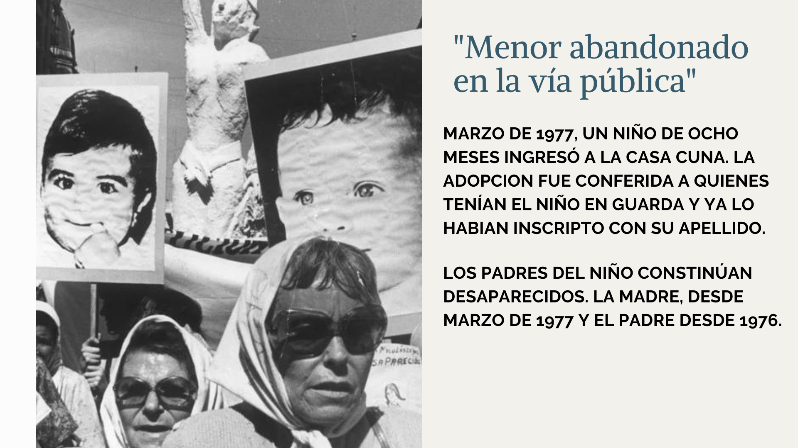
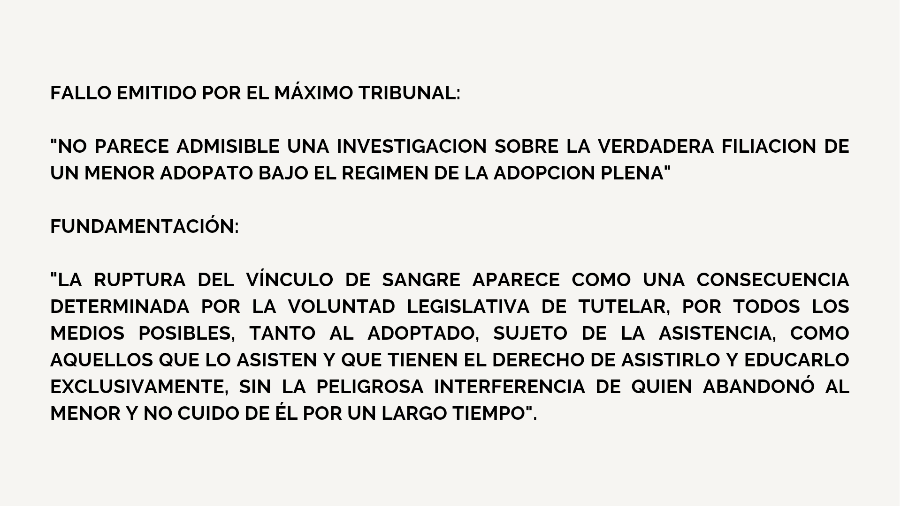
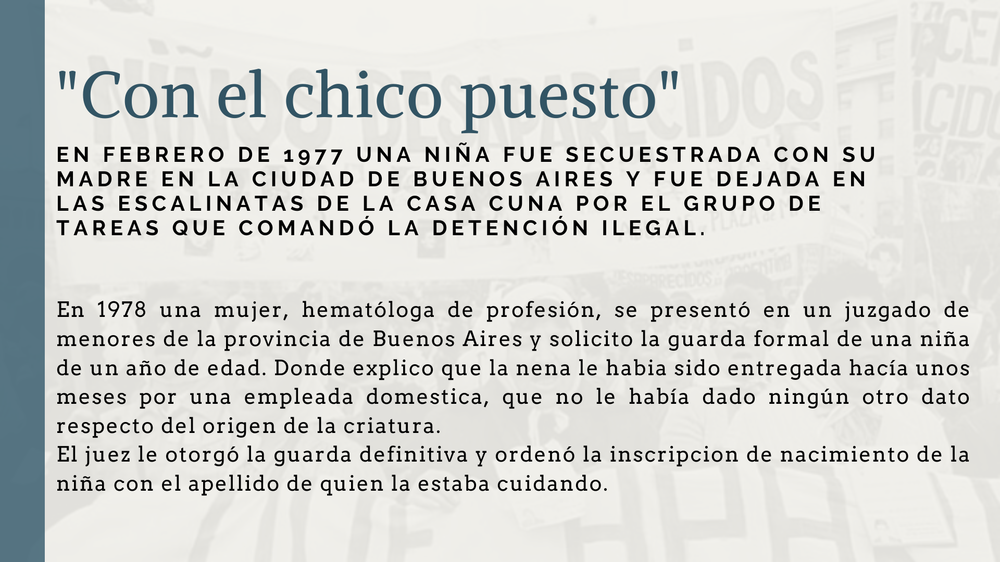
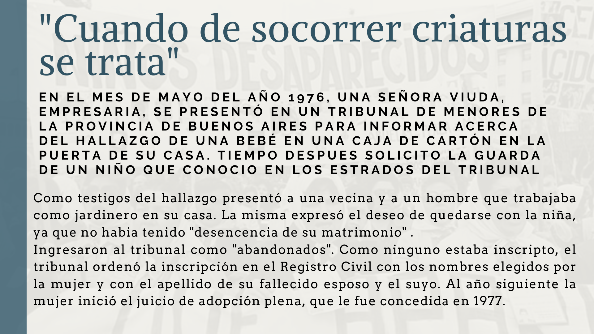
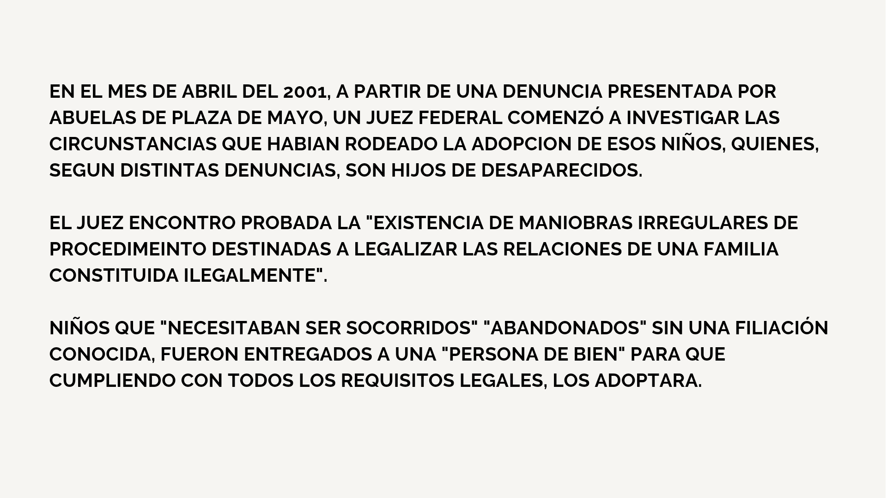
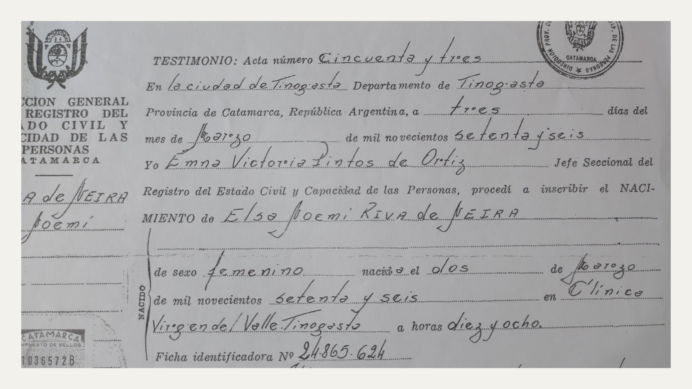
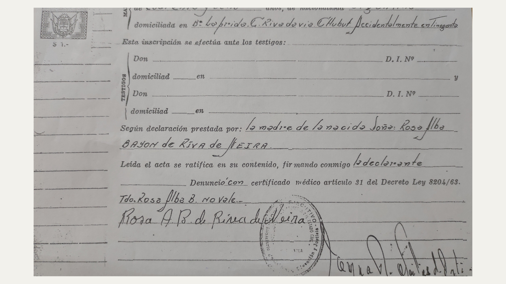
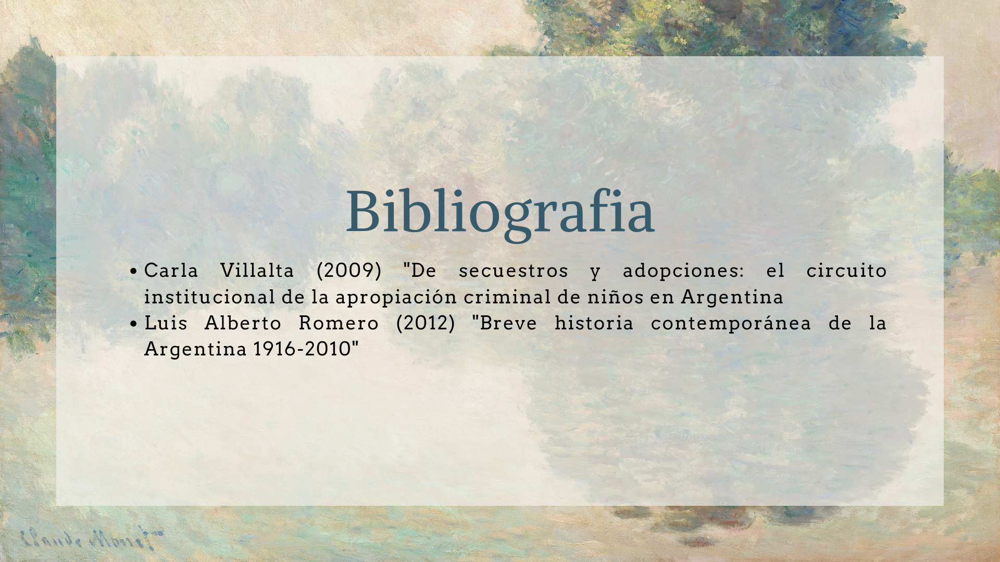

Análisis a cerca de secuestros y adopciones: El circuito institucional de la apropiación
criminal de niños en Argentina por Carla Villalta
El golpe de estado prometía restablecer el orden y asegurar el monopolio estatal de la
fuerza. La propuesta de los militares consistia en eliminar de raíz el problema que en su
diagnóstico se encontraba en la sociedad misma. La represión fue una acción sistematizada
desde el Estado, se trató de una acción terrorista clandestina, dividida en cuatro momentos
principales.
- El destino primero del secuestro era la tortura, sistematica y prolongada, con el fin
de quebrar la resistencia del detenido, anular sus defensas, destruir su dignidad y su
personalidad.
Las víctimas fueron muchas pero su principal objetivo eran los vivos, el conjunto de la
sociedad que, antes de emprender su transformación, debía ser controlada y dominada por
el temor y la palabra. “Achicar el estado y silenciar a la sociedad.” La reorganización del
Estado no se limitó a suprimir los mecanismos democráticos constitucionales para alterar
las instituciones republicanas, como había ocurrido en los regímenes militares anteriores. El
mismo gobierno militar de ese entonces, en la ley 19.134 la adopción de niños, donde el
proyecto fue convertido en ley y la “adopción plena” fue usada para consumar la apropiación
de los hijos de quienes se desaparecían y se mataba. Dichos niños fueron apropiados por lo
general mediante dos modalidades:
- La inscripción falsa como hijo propio en el registro civil y la adopción pseudo-legal.
La inscripción falsa, es decir aquel procedimiento que consistía en anotar en el registro civil
como hijo propio a un niño que no lo era y que debido a la falta de controles existentes y a
la alta tolerancia social, era visto como otra forma de adopción, a pesar de estar tipificado
como un delito. Este procedimiento fue utilizado fundamentalmente en casos de bebés
nacidos durante el cautiveio de sus madres en centros clandestinos de detención.
Por lo que la ley no sólo reglamentó la “adopción plena” sino que también instauró nuevos
mecanismos para agilizar su trámite, estos mecanismos consistian en la eliminación casi
completa de los padres biológicos en el juicio de adopción y en la aplicación de las
facultades del organismo administrativo de protección de la minoridad junto con el
reconocimiento de las entregas de niños mediante la escritura pública.
Se postulaba que era necesaria una reforma que agilizara los procedimientos por los cuales
los padres que “abandonan” a sus hijos se vieran privados del derecho, de modo que se
pudiera actuar con seguridad y alteridad para proporcionar a los menores la “estabilidad
familiar” que necesitaban.
Por lo tanto la nueva ley estipulo una adopción definitiva, exclusiva e irrevocable:
- Fijó que era atribución del juez citar o no a los progenitores al juicio de adopción.
Las narrativas sobre el abandono habilitaban y legitimaban la actuación de distintos
funcionarios que en este tiempo procuraban una familia normalmente constituida. Es decir
que hubo una sustitución de identidad de algunos niños desaparecidos.








